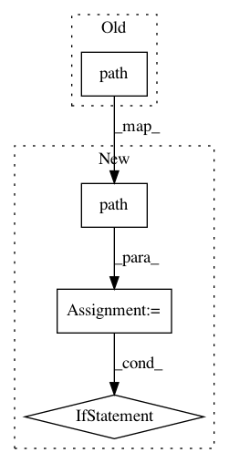

9e1ecd7124af55e84d113a63d189262faafa5ad0,tests/components/test_history.py,TestComponentHistory,tearDown,#TestComponentHistory#,30
Before Change
if self.init_rec:
recorder._INSTANCE.block_till_done()
os.remove(self.hass.config.path(recorder.DB_FILE))
def init_recorder(self):
recorder.setup(self.hass, {})
After Change
Stop down stuff we started.
self.hass.stop()
db_path = self.hass.config.path(recorder.DB_FILE)
if os.path.isfile(db_path):
os.remove(db_path)
def init_recorder(self):
recorder.setup(self.hass, {})
self.hass.start()
self.wait_recording_done()
In pattern: SUPERPATTERN
Frequency: 4
Non-data size: 4
Instances
Project Name: home-assistant/home-assistant
Commit Name: 9e1ecd7124af55e84d113a63d189262faafa5ad0
Time: 2015-12-27
Author: paulus.schoutsen@mycase.com
File Name: tests/components/test_history.py
Class Name: TestComponentHistory
Method Name: tearDown
Project Name: biolab/orange3
Commit Name: eef94931eca0c0913d0edca5637e994d6d280c96
Time: 2013-05-31
Author: anze.staric@gmail.com
File Name: Orange/canvas/application/canvasmain.py
Class Name: CanvasMainWindow
Method Name: save_scheme
Project Name: home-assistant/home-assistant
Commit Name: 5a35e4a9baa753e5847b4d9333506713c2f5b304
Time: 2016-03-26
Author: me@robbiet.us
File Name: homeassistant/components/sensor/gtfs.py
Class Name:
Method Name: setup_platform
Project Name: home-assistant/home-assistant
Commit Name: 295f27d259cebf065ce5b7867a2ef4e094f3e8df
Time: 2015-11-15
Author: paulus@paulusschoutsen.nl
File Name: homeassistant/bootstrap.py
Class Name:
Method Name: process_ha_config_upgrade